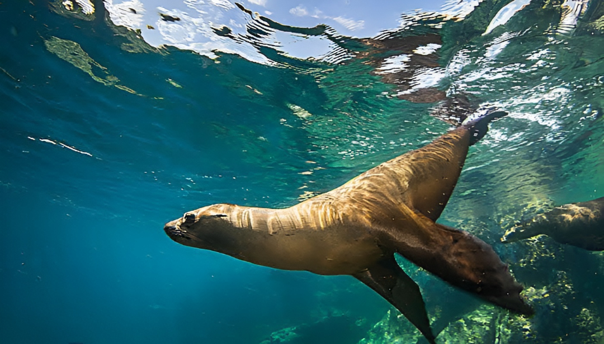
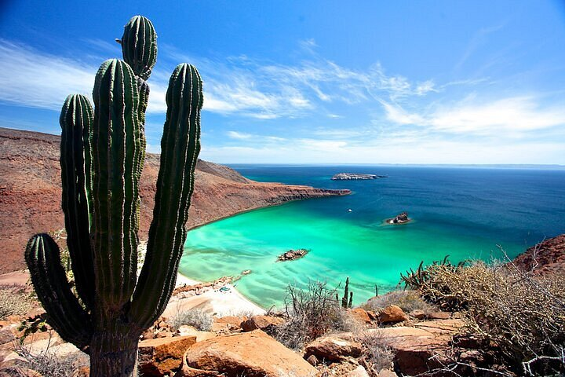
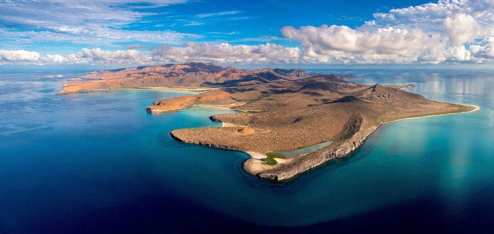

Isla Espiritu Santo

FAUNA
( viven especies endémicas, como el babisuri, la liebre negra y el juancito , que no se encuentran en otro lugar del mundo)
La isla Espíritu Santo, frente a La Paz, es un paraíso natural con una fauna que encanta a los visitantes. Su mayor atractivo es la colonia de lobos marinos, donde es posible verlos nadar y jugar muy cerca de los turistas.
También por su gran diversidad de aves, reptiles y especies marinas, como el bobo de patas azules, lo que la convierte en un destino ideal para el ecoturismo. En sus aguas es común avistar delfines, mantarrayas, tortugas marinas y, en algunas temporadas, hasta tiburones ballena.

FLORA
(Área Natural Protegida de La Paz)
La flora de la isla Espíritu Santo es muy llamativa, con cactus, torotes, cardones y manglares que muestran cómo la vida se adapta al clima seco y al mar. Además, el archipiélago alberga plantas endémicas únicas, como Opuntia brevispina, que solo crece en esta zona.

ACERCA DE LA ISLA
(Patrimonio Natural de la Humanidad)
La Isla Espíritu Santo está conectada a la Isla Partida por istmo estrecho. La orografía de ambas es completamente diferente a las otras islas del Golfo. La isla tiene un área de tierra de 80.763 km² la duodécima isla más grande de México. El área terrestre de la Isla Partida es de 15.495 km².
El área es protegida por la Unesco como biosfera, y su importancia como un destino ecoturístico es el factor principal.Las islas están ambas deshabitadas. Las islas son parte del municipio de La Paz.